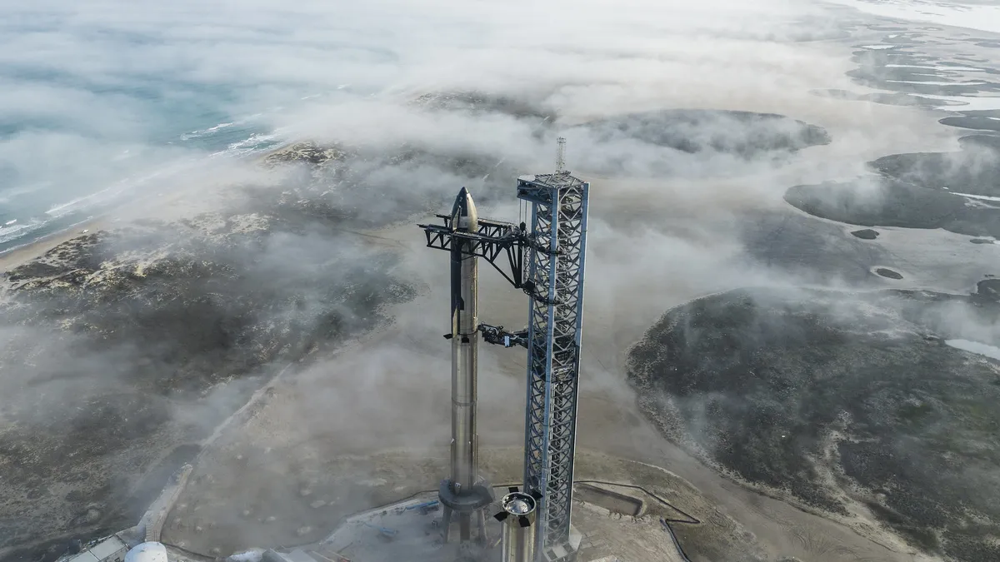

I'm Anish Sharma
Hello! I am Anish! This is my personal portfolio with a collection of my interests and information about me.
I'm currently a student at Eastside Preparatory School in Kirland, Washington. I am in 9th grade and one of my favorite subjects is math. There are many other interests I have which will be covered in the about page. One thing I'm interested in is rocketry. A whole infinite universe lies ahead of us. Humankind is on a mission to explore this, and learning about rockets, rocket propulsion, and the mysteries of the universe makes this my something I am really enjoy learning about.
